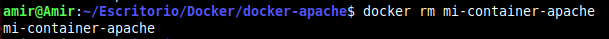
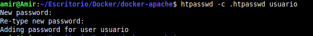
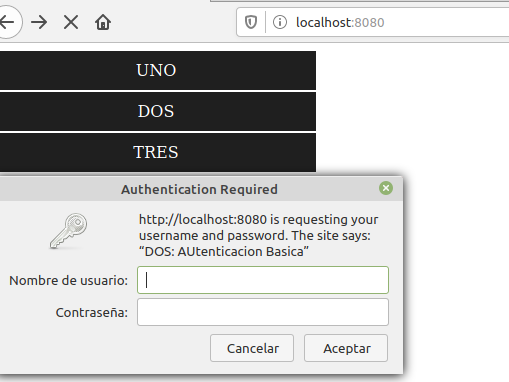
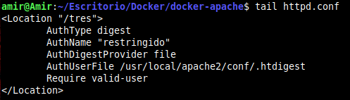

¿Que es Docker?
Docker es un Subsistema de virtual ización que comparte con el anfritión el Kernel y el sistema de archivos .El anfitrión siempre es un sistema Linux. Si estamos en Windows o Mac, necestaré u na maquina virtualizada con VirtualBox o similar
Un software de máquinas virtuales necesita instalar el sistema operativo completo.
Ejemplos de sistemas de virtualización
- ◼ VirtualBox
- ◼ Hyper-V (Windows)
- ◼ Parallels (MAC)
- ◼ VMWare (Multiples plataformas)
- ◼ QEMU (Linux)
- ◼ XEN (Linux/UNIX)
- ◼ KVM (Linux/UNIX)
Un software de contenedores es un sistema de virtualización que comparte el Kernel con el anfitrión. Se basa en el concepto de microservicio, donde tengo todos los programas instalados, configurados y funcionando, gracias a los contenedores.
Ejemplo se software de contenedores.
- ◼ LXD (Linux)
- ◼ Docker
- ◼ Kubernetes
Docker vs Maquina Virtual


Mas informacion
Dockerfiles, ¿Qué son?
Un dockerfile es una receta para crear u na imagen para una de aplicación particula r de Docker. De este modo podemos tomar una i magen base, instalarle programas, configurar e sos programas y dejarla preparada para crear con tenedores a partir de ella
Ejemplo Dockerfile
# use phusion/baseimage as base image.
from Ubuntu:latest
# use baseimage-docker's init system.
cmd ["/sbin/my_init"]
# install prerequisites
run apt-get update; \
apt-get install -y udhcpd
# set up start up scripts
run mkdir /etc/service/udhcpd
add udhcpd.sh /etc/service/udhcpd/run
run chmod +x /etc/service/udhcpd/run
# clean up apt when done
run apt-get clean && rm -rf /var/lib/apt/lists/* /tmp/* /var/tmp/*
# expose the port
expose 67
expose 67/udp
expose 68
expose 68/udp
# volumes
volume /data
Comando from: Buscas la imagen mas reciente de ubuntu con ubuntu:latest
Comando run: Ejecutas y añades scrip para actualizar el sistema e instalar udhcp
Comando expose: Abres los puertos 67 y 68
Comando volume: Comparte una carpeta entre el contenedor de docker y el host
SSH, ¿Qué es?
SSH o Secure Shell, es un protocolo d e administración remota que le permite a los usuarios controlar y modificar s us servidores remotos a través de Inter net a través de un mecanismo de autenticación.
Proporciona un mecanismo para autenticar un usuario rem oto, transferir entradas desde el c liente al host y retransmitir la salid a de vuelta al cliente. El servicio se creó como un reemplazo seguro para el Telnet sin cifrar y utiliza técnicas criptográficas par a garantizar que todas las comunicaciones hac ia y desde el servidor remoto sucedan de manera encriptada
1. Configurar SSH
1.1 Instalamos el servidor SSH en Linux y comprobamos que se escucha el puerto 22.
sudo nmap -sU --top-ports 1000 scanme.nmap.org

1.2 Crear dos usuarios denominados usuario1 y usuario2.
sudo useradd -m -d /home/alumno1 alumno1 -s /bin/bash

1.3 Cambiar de puerto del servidor e intentar acceder de nuevo
Port 2222

1.4 Cambiar configuracion del servidor para acceder con el usr1 y no con el usr2
AllowUsers alumno2 , DenyUsers alumno2
1.5 Intentamos acceder
ssh alumno2@192.168.18.210

1.6 Cambiamos la configuracion para que solo pueda acceder una Ip determinada
AllowIP 192.168.18.247

1.7 Buscamos el paquete del SSH dentro de WireShark y comprobaremos que esta encriptado

Telnet, ¿Qué es?
Telnet es una herramienta que ha sido utilizada durante décadas por los administr adores de sistema informáticos en el ámbito de l as redes. Las conexiones remotas no son algo precis amente nuevo, ya desde las primeras redes y con sistem as sin escritorio se utilizaban herramientas como Telnet para conectarnos a servidores y equipos conectados a una red, tanto de forma remota como interna
1. Configuracion telnet
1.1 Instalamos Telnet mediante el siguiente comando
sudo apt install telnetd

1.2 Despues ejecutamos el siguiente comando para iniciar el servidor Telnet
sudo /etc/init.d/openbsd-inetd restart

1.3 Comprobamos que el servicio de Telnet esta funcionando con un:
snmap localhost

1.4 Cuando lo tengamos ejecutado nos conoectaremos con el comando (192.168.18.210 es la Ip de la Raspberry):
telnet 192.168.18.210

1.5 Ejecutamos algunos comandos desde Telnet y vamos al wireshark a analizar trafico
Buscamos el paquete y hacemos Click en Follow TCP Stream (Podemos ver que no va encriptado)

¿Qué es HTTP?
El Protocolo de tran sferencia de hipertexto (en i nglés, Hypertext Transfer Protoc ol, abreviado HTTP) es el protocol o de comunicación que permite las tra nsferencias de información en la World Wide Web
Realizamos una peticion web y abrimos wireshark

Protocolos usados
Transporte = TCP
Enlance = Ethernet 2
Red = IPv4

Puertos implicados en la capa de transporte
Estan implicados los siguientes puertos
Puerto Origen : 37612
Puerto Origen : 80
Payload es de unos 87 bytes

Direccions IP Implicadas en esta peticion
Ip Origen : 192.168.18.149 → Pertenece a mi equipo
Ip Destino : 192.168.18.3 → Pertenece a Cisco
El Payload es 402 – 20 = 382 bytes

Direcciones MAC Implicadas en esta peticion
Destino → MAC de Cisco
Origen → MAC de mi Equipo
Payloads
Ipv4 382 bytes
TCP 1046 bytes
TCP 1046 bytes
Protocolo usado
HTTP 1.1
Acuerdo en tres bandas entre cliente y servidor
Los 3 primeros paquetes TCP de esta captura son el acuerdo en tres bandas entre cliente y servidor. Se envían paquetes 3 paquetes entre el servidor y el cliente para ponerse de acuerdo y luego se empiezan a enviar los datos.
¿Que es el FTP?
El Protocolo de transferencia de archivos (en inglés F ile Transfer Protocol o FTP) es un protocolo de red para la transferencia de archivos entre sistemas conectados a una r ed TCP (Transmission Control Protocol), basado en la arquite ctura cliente-servidor
Desde un equipo cliente se puede conectar a un servidor para descargar archivos desde él o para enviarle archivos, independientemente del sistema operativo utilizado en cada equipo. El servicio FTP es ofrecido por la capa de aplicación del modelo de capas de red TCP/IP al usuario, utilizando normalmente el puert o de red 20 y el 21
1. En esta guia vamos a configurar un servidor FTP
1.1 Habilitamos el modo Anonimo
anonymous_enable=yes

1.2 Habilitamos las opciones para usuarios del Sistema y para que pueda descargar y subir
local_enable=YES
write_enable=YES

1.3 Habilitamos el modo pasivo
passive

1.4 Habilita los logs
xferlog_file=/far/log/vsftpd.log
1.5 Screenshoot logs
Screenshoot here

1.6 Abrimos WireShark y comprobamos que esta funcionando en modo pasivo
Screenshoot here
1.7 Pantallazo Acceso modo grafico
Screenshoot here

¿Que es Apache?
Apache es un software especializado en ofrecer servicios de servidor web. Es versátil, ligero y muy útil, además de ser completamente gratuito y de código abierto
Apache sirve para mostrar toda la información en pantalla cuando un usuario realiza una búsqueda web. Es el software que se encarga de acceder a los ficheros alojados en el servidor para mostrar sus contenidos a petición del visitante.
1. Reverse
A continuación vamos a ver los pasos a seguir para crear el contenedor (Docker) a partir de una imagen personalizada.
1.2 Pimero preparamos los archivos de la Web que contendrá el servidor:
$ mkdir public-html/{uno,dos,tres}
$ cat > ./public-html/index.html
1.3 Ahora creamos el fichero "Dockerfile" con este contenido:
cat > Dockerfile
1.4 El siguiente paso es generar la imagen que nos servirá de plantilla para nuestros contenedores:
$ docker build -t mi-imagen-apache2 .
1.5 Ahora podemos crear un contenedor "vivo", lo creamos y lanzamos con:
$ docker run -dit --name mi-container-apache -p 8080:80 mi-imagen-apache2
1.6 Parar el contenedor (para poder borrarlo):
$ docker stop mi-container-apache
1.7 Borrar el contenedor:
$ docker rm mi-container-apache
1.8 Copiar el archivo de configuración del contenedor a la máquina física (se hace en la misma carpeta donde está el Dockerfile):
docker cp mi-container-apache:/usr/local/apache2/conf/httpd.conf .
2. Modificamos el Dockerfile:
3. Creacion del fichero htpasswd
3.1 En el directorio de trabajo (donde está el Dockerfile) ejecuto:
$ htpasswd -c .htpasswd usuario
4. Añadir el .htpassword a la imagen
4.1 Modifico el Dockerfile para que quede así:
5. Añadimos la autenticación a Apache
6. Creo un script para automatizar la actualización de los contenedores
6.1 (fichero reload.sh)
7. Accedemos a DOS
7.1 Nos pide autenticación basica
8. Autenticación DIGEST
8.1 Primero: creamos el archivo de contraseñas:
htdigest -c .htdigest restringido pepe
8.2 Segundo: modificamos el Dokcerfile:
8.3 Tercero: Modifcamos el httpd.conf añadiendo al final:
8.4 Activamos el modulo del digest
8.5 Probamos la autenticación DIGEST
9. Anadiendo seguridad SLL al contenedor
9.1 Ejecutamos los siguientes comandos
mkdir ssl
openssl genrsa -out ssl/server.key 1024
openssl req -new -key ssl/server.key -out ssl/server.csr
openssl x509 -req -days 365 -in ssl/server.csr -signkey ssl/server.key -out ssl/server.crt
9.2 Modificamos el Dockerfile:
9.3 Modificamos el httpd.conf:
9.4 Comprobamos el https://
10. Apache2 como reverse proxy
10.1 Primero creamos estos directorios
10.2 Contenido del Index
10.3 Contenido del Dockerfile
10.4 Contenido del httpd.conf
10.5 Comprobamos que funciona correctamente